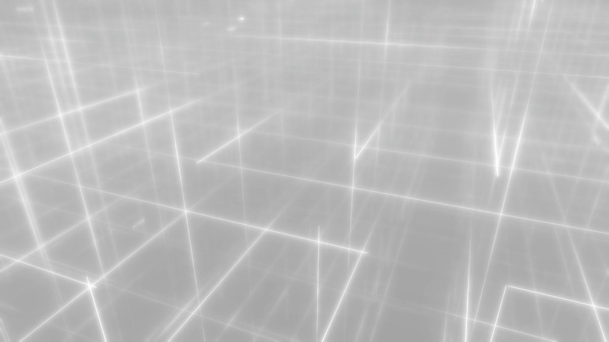
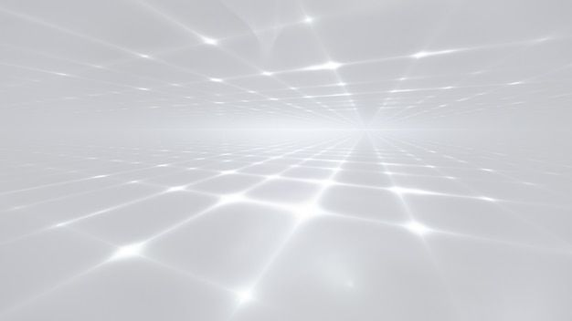
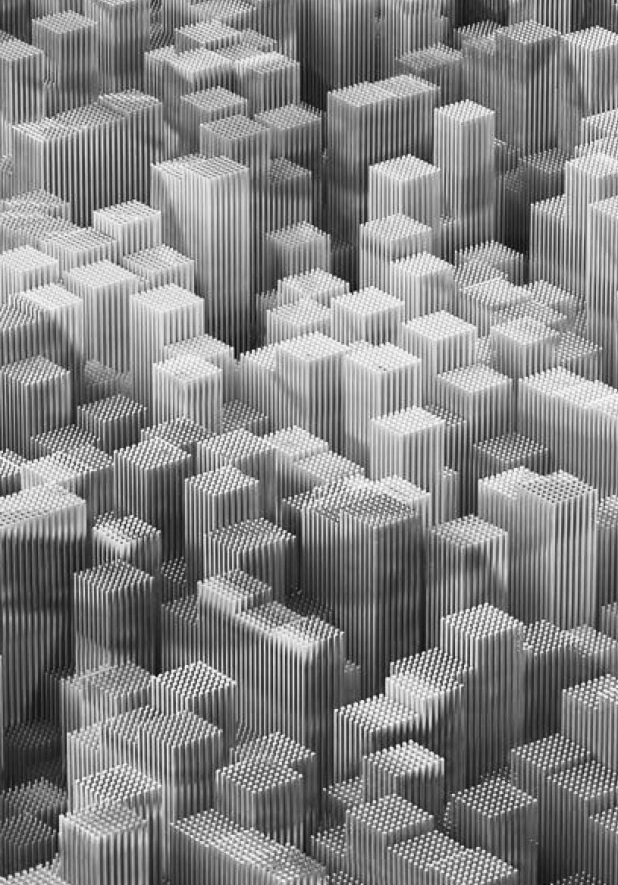
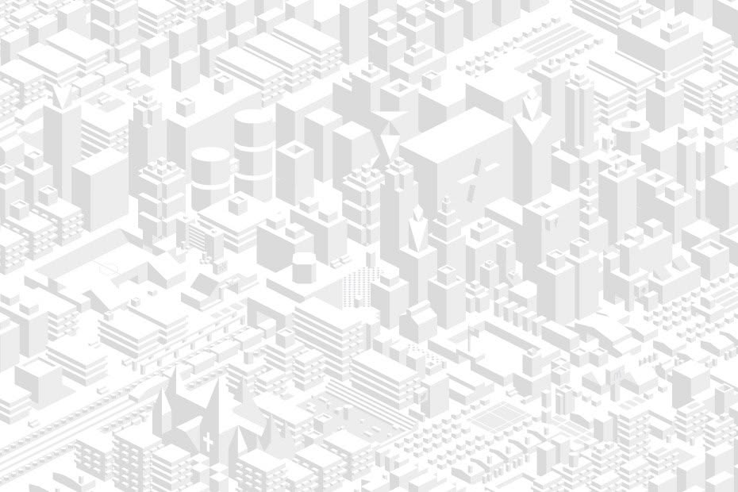
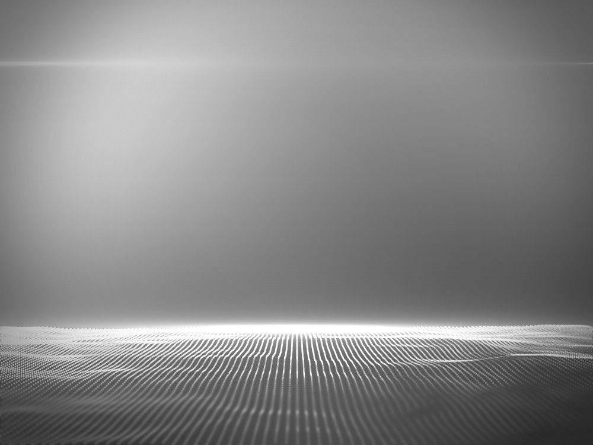
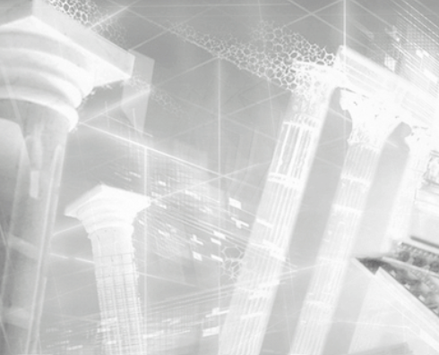

Os videogames evoluíram muito, mas os jogos educacionais ficaram presos a estéticas e escopos pequenos. O aprendizado mora na escola e o jogo mora em casa. Quase não existe um lugar, nem virtual, que encante em vez de alienar e que desenvolva a pessoa sem deixar de ser divertido. É o que este projeto chama de atividade Optima: inclusiva, divertida, relevante para a sociedade e boa para o indivíduo.
O White Room é o primeiro produto dessa ideia: um jogo 3D sobre tecnologias atuais em que o conteúdo é a própria mecânica, a narrativa dá um motivo real para dominar os fundamentos, e a direção de arte compete pela atenção do jogador sem tentar copiar um orçamento AAA.
Ensino médio avançado, cursinho e começo de graduação em engenharia e computação. O tom é moralmente cinzento: crime, armas e vigilância. Isso é uma decisão consciente e deixa de fora o mercado escolar infantil.
VR fica para depois. Toda HUD é diegética e posicionada no mundo (world-space) desde o primeiro protótipo, para que a versão VR não precise refazer a interface.
Rádio e IoT, funções, sistemas digitais. O material base vem dos projetos de estudo do Telos (Pré-cálculo, ELE300, COM380).
O jogador não responde sobre alcance de rádio: ele posiciona a antena, vê a cobertura e assiste o plano falhar. Questionários só entram como verificação, nunca como mecânica principal.
Num mundo onde tudo é abstração e IA, quem entende a base sobrevive. A economia do jogo paga mais pelo básico feito sem IA. É a tese educacional dita por um personagem e não por um professor.
Toda falha mostra a causa com números (faltou alcance, a bateria acabou em 40 min). O jogador pode tentar de novo na hora. A punição narrativa só vem do que ele escolhe fazer, não de errar uma conta.
A abstração do White Room é a assinatura visual: branco, luz, névoa e geometria. O capricho de material e detalhe fica concentrado no apartamento, o único espaço "realista".
O protótipo existe para responder uma pergunta: este loop é divertido sozinho, sem a narrativa? Um ciclo completo deve caber em 10 a 20 minutos.
A consequência pode ser dinheiro, um novo cliente, uma área liberada ou risco (registros que uma varredura pode encontrar). Entre um trabalho e outro, o agendador de revisão espaçada injeta revisões curtas com prazo.
O protagonista é calouro de engenharia da computação no século 21 e acorda num apartamento futurista e bagunçado. A porta não abre. O sistema de IA da casa, DIMAS, explica que recebeu ordens do antigo dono do corpo: ninguém sai até os trabalhos ficarem prontos. O antigo dono era um super engenheiro que se envolveu com gente perigosa e se trancou ali para terminar as encomendas. As mensagens dos clientes começam a chegar.
Calouro do século 21. Sabe pouco, mas sabe pensar. É o jogador: cada coisa que ele aprende é algo que o jogador aprendeu.
IA pessoal do apartamento, leal ao antigo dono e aos poucos ao novo. Tutor, narrador e consciência prática. Fala dos fundamentos como questão de sobrevivência: "de fome ou de violência".
Engenheiro brilhante e ausente. Criou o White Room e o sistema de revisão preditiva. Aparece em flashbacks jogáveis e em quartos secretos.
Uma gangue que planeja um roubo, um empresário de armas militares e outros que chegam com o tempo. Cada um traz uma tecnologia e um dilema.
Pequeno, denso, bagunçado e cheio de objetos que contam a vida do antigo dono. Geladeira, terminal, porta trancada. É onde o orçamento de arte se concentra.
A simulação. Cada tecnologia vira um objeto geométrico interativo com sua HUD flutuante. Branco infinito, grade de luz, névoa.
A cidade em volumes brancos e limpos, sem textura. É o tabuleiro das missões: prédios bloqueiam sinal, ruas viram rotas.
Áreas liberadas ao longo da campanha: quartos secretos, flashbacks no corpo do antigo dono, o andar do prédio e a cobertura.
| Item | Tipo | O que faz | Fase |
|---|---|---|---|
| HUD holográfica diegética | Mecânica | Painéis no espaço 3D, olhados e tocados, nunca sobrepostos à tela | Protótipo |
| Pegar, ler e mover itens | Mecânica | Cada item tem descrição; alguns guardam pistas ou conteúdo | Protótipo |
| Câmera em 3ª e 1ª pessoa | Mecânica | Alternar com uma tecla; 1ª pessoa obrigatória nas HUDs pequenas | Protótipo |
| Posicionar e configurar dispositivos | Mecânica | Núcleo da Missão 1: antenas e rádios no mapa | Protótipo |
| Revisão espaçada | Dinâmica | Revisões com prazo, geradas por um agendador | Protótipo |
| Apagar registros no DIMAS | Mecânica | Escolher o que sobrevive a uma varredura | v1 |
| Alertas de invasão e varredura | Dinâmica | Eventos com tempo que reagem ao que está na memória | v1 |
| Ligações de NPCs | Dinâmica | Chamadas que trazem trabalhos e avançam a história | v1 |
| Comprar itens | Mecânica | Gastar o dinheiro dos trabalhos (comida, peças, acesso) | v1 |
| Comer da geladeira | Mecânica | Fome como relógio suave da economia | v1 |
| Customização de personagem | Mecânica | Aparência do corpo do século 23 | Depois |
| VR | Plataforma | Mesmas HUDs world-space, nova locomoção | Depois |
A gangue precisa de comunicação para um roubo. O jogador descobre que alcance, taxa de dados e consumo de energia não cabem juntos numa tecnologia só. Pagamento: ¤ 1.200. DIMAS confessa alívio: a comida estava acabando.
Surge de surpresa: puzzles de funções compostas. DIMAS explica que o antigo dono criou revisões espaçadas guiadas por um modelo que prevê os próximos pedidos dos clientes. Depois disso, revisões chegam com prazo, sem interromper.
Um empresário precisa precificar armas recém-criadas com funções compostas e não pode usar IA, por risco de vazamento. Pagamento: ¤ 2.400, o dobro do rádio, por um assunto básico. "Hoje ninguém sabe o básico sem IA."
DIMAS avisa que uma varredura militar compulsória deve acontecer em minutos. A precificação feita sem IA está segura, mas o trabalho do roubo continua na memória. O jogador abre a HUD do DIMAS pela primeira vez e apaga o registro. A varredura só começa se ele tiver apagado; se não apagou, a consequência fica para depois.
| Enlace | Precisa de | Distância | Energia disponível | Resposta |
|---|---|---|---|---|
| A · Voz no cofre 3 membros falando entre si no subsolo | 32 kbps 2 h | ≤ 30 m | Fone de ouvido ~220 mWh | BLE |
| B · Sensores escondidos status das portas a cada 10 s até a van | < 1 kbps 72 h | 2,4 km com prédios | Bateria de moeda ~675 mWh | LoRa |
| C · Vídeo do drone câmera de vigia em 1080p até a van | 5 Mbps 45 min | 300 m visada direta | Bateria do drone ~50 Wh | Wi-Fi |
O celular resolve os enlaces B e C tecnicamente, mas a conexão passa pela operadora e fica registrada, e a vigilância militar vê. No enlace A, o subsolo blindado não tem sinal. A simulação aceita o celular e mostra a consequência: o roubo dá certo, mas a gangue é rastreada. É a primeira lição de que a melhor escolha técnica depende do contexto.
| Tecnologia | Alcance urbano | Taxa útil | Consumo transmitindo | Observação |
|---|---|---|---|---|
| BLE 5 | 10–50 m | até 1,4 Mbps | ~15 mW | Feito para baterias minúsculas |
| Wi-Fi 6 | 30–70 m 300 m direcional | 100–600 Mbps | ~800 mW | Rápido e guloso |
| LoRa | 2–5 km | 0,3–22 kbps | ~120 mW dorme em µW | Fator de espalhamento troca taxa por alcance |
| Celular (5G) | 1–5 km até a torre | 50–1000 Mbps | ~1500 mW | Depende de operadora e deixa registro |
Valores arredondados de faixas típicas reais, ajustados para o jogo. DIMAS avisa: "os nomes mudaram em duzentos anos, a física não". Em missões futuras o "escolha duas" se aprofunda em espectro, ruído e o limite de Shannon.
Uma função é uma máquina geométrica no White Room: entra um número, sai outro. Compor é ligar a saída de uma máquina na entrada da próxima. Os puzzles pedem para montar a cadeia certa, prever a saída, achar a fórmula da composta ou ler a composta em tabelas e gráficos.
Unidade 1 do Pré-cálculo do Telos: habilidades avaliar, tabelas-graficos, formula e modelar. Fonte: Telos/supabase/seeds/precalc/deck-u1.mjs, exportado para JSON no projeto Unity.
Leitner primeiro (já usado no Synapse do Telos), FSRS depois. Cada habilidade tem um prazo de revisão. Na ficção, o prazo é a previsão de que um cliente vai pedir aquilo em breve.
Regra contra interrupção: a primeira revisão chega de surpresa como evento narrativo. As seguintes aparecem como pendências com prazo no jogo ("revisão pendente, 2 h"). Ignorar não bloqueia nada, mas um cliente percebe que o protagonista está enferrujado e paga menos.
As referências apontam para uma simulação clara e silenciosa, o oposto do cyberpunk neon de sempre. O cyberpunk aparece no apartamento e na história; o White Room é limpo, quase sagrado. A troca entre os dois espaços é o grande contraste visual do jogo.






Névoa#ECEEF1
Luz#FBFBFC
Grafite#62666E
Tinta#111214
Interativo#2563EB
Funciona#15803D
Falha#B4500B
As imagens são apenas referência e não entram no jogo. A WR6 tem marca d'água de banco de imagens.
| Módulo | Responsabilidade |
|---|---|
| WhiteRoom.Radio | Tecnologias, enlaces, cálculo de alcance, taxa, autonomia e rastro (sem dependência de cena) |
| WhiteRoom.Missions | Estado da missão, simulação em linha do tempo, resultado por enlace |
| WhiteRoom.Player | Movimento, troca de câmera, pegar e mover itens |
| WhiteRoom.Hud | Painéis world-space, ligação com os dados |
| WhiteRoom.Review | Agendador de revisão e puzzles de funções (Missão 2) |
| # | Entrega | Pronto quando |
|---|---|---|
| P1 | Projeto Unity e modelo de rádio | Testes EditMode passam com os três enlaces e as quatro tecnologias |
| P2 | Mapa e posicionamento | Arrastar rádios no mapa, cobertura recortada por prédios |
| P3 | Simulação da Missão 1 | Rodar, ver falhas com causa, tentar de novo, entregar |
| P4 | Player e HUD | Andar no White Room, pegar rádio, ler a HUD, trocar de câmera |
| P5 | Missão 2 | Puzzles de compostas com conteúdo do Telos e agendador |
| P6 | Teste com jogadores | 3 a 5 pessoas do público jogam e a telemetria é lida |